Patterns & Rules
30 activities · Sequences, repetition, and patterns.
Patterns, puzzles, numbers, and visual challenges in an illustrated workbook that invites kids to explore ideas, solve problems, and explain their thinking.
Printable digital PDF · Activities in English · Answer key included
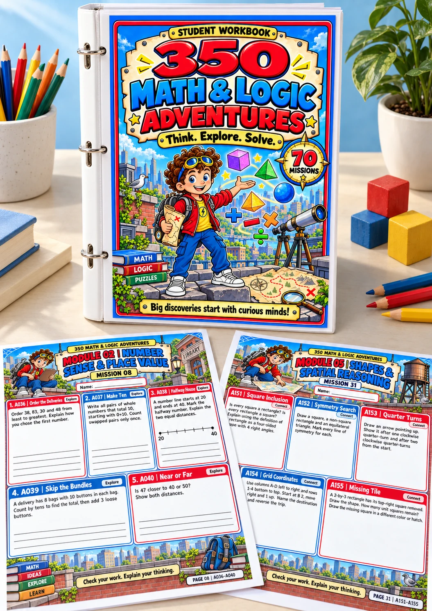
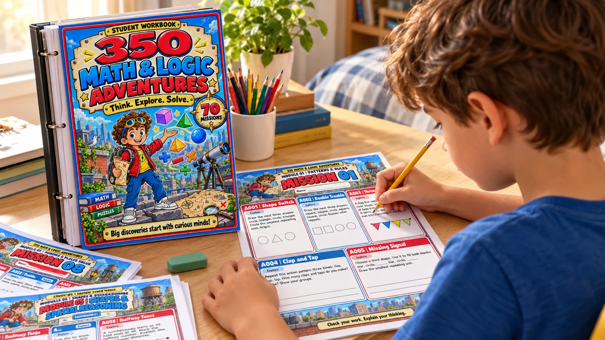
A pattern to complete. A clue to investigate. A shape to draw. Each mission brings together five challenges that encourage kids to observe, experiment, and put their ideas on paper.
Go beyond basic calculations with challenges that connect math, logic, and everyday situations. Clearly organized topics make it easy to choose the next activity.
30 activities · Sequences, repetition, and patterns.
35 activities · Quantities, comparisons, and number composition.
40 activities · Strategies for calculating and explaining.
35 activities · Grouping and foundational concepts.
30 activities · Geometry, symmetry, and positions.
35 activities · Logic and eliminating possibilities.
30 activities · Comparing and investigating measurements.
25 activities · Math in real-life situations.
25 activities · Equal shares and relationships between parts.
25 activities · Organizing and interpreting information.
25 activities · Exploring strategies and solutions.
15 activities · Connecting different math skills.
Explore two workbook pages, with room to draw, record strategies, and solve five challenges in each mission. Tap an image to take a closer look.
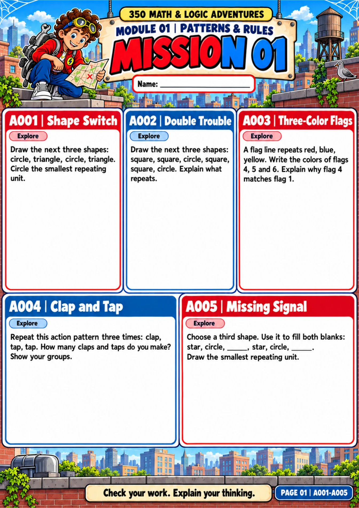
Mission 01 · Patterns & Rules
Kids complete sequences of shapes and colors, identify what repeats, and record their discoveries.
View full-size page ↗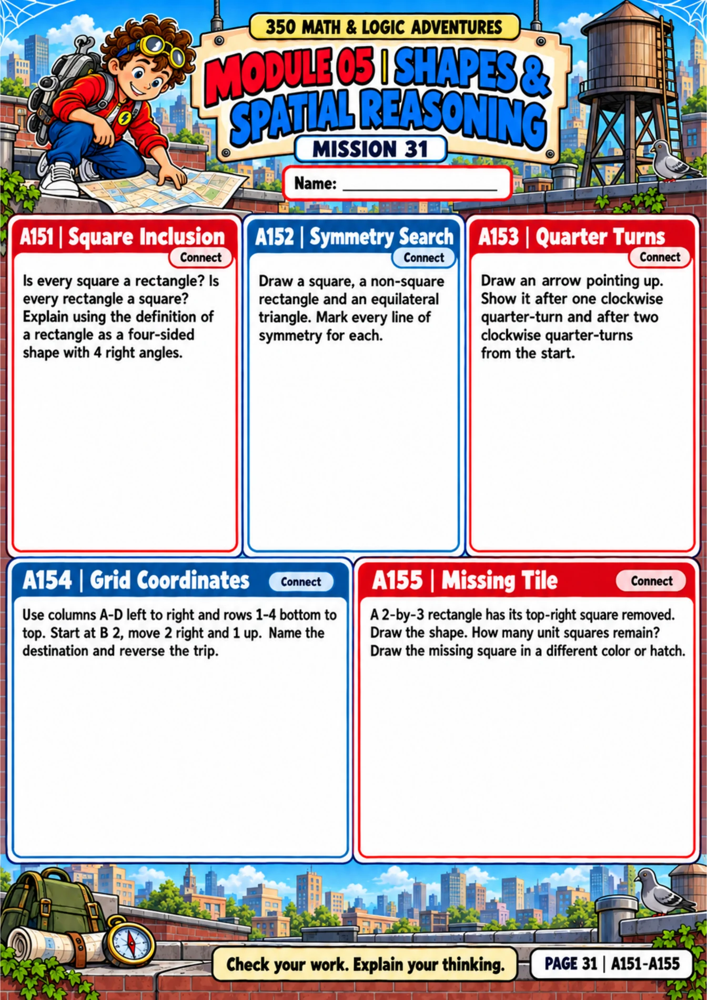
Mission 31 · Shapes & Spatial Reasoning
Symmetry, turns, and coordinates become challenges that call for observation, drawing, and reasoning.
View full-size page ↗These previews show the original English-language PDF.
The Answer & Teaching Guide helps you support each discovery with answers, explanations, and visual examples. Take a look at these two sample pages from the guide.
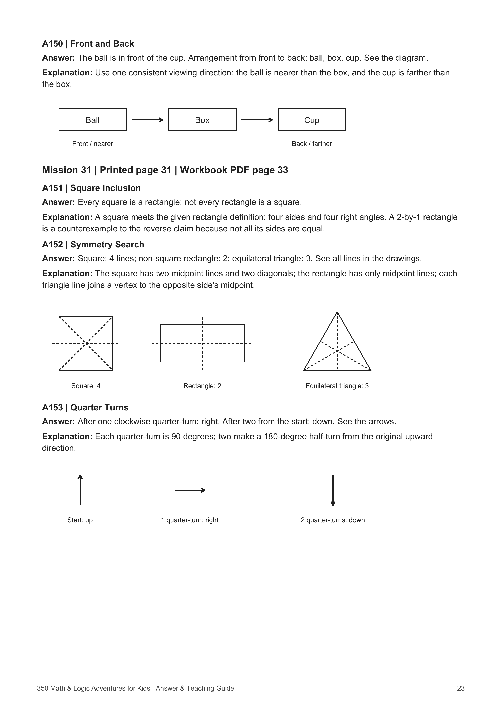
Shapes & Spatial Reasoning
Answers and diagrams explain square and rectangle properties, lines of symmetry, and clockwise quarter-turns.
View full-size answer key sample ↗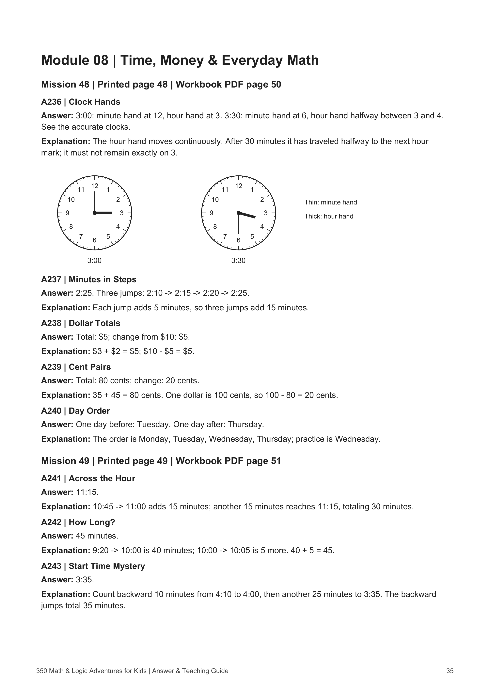
Time, Money & Everyday Math
Clock diagrams and worked explanations show how to read the hands, count minutes, calculate change, and reason through time problems.
View full-size answer key sample ↗Sample pages from the included Answer & Teaching Guide. Tap either image to read it in full size.
Choose a topic, gather your supplies, and invite your child to explore. Set a pace that suits their skills and learning needs.
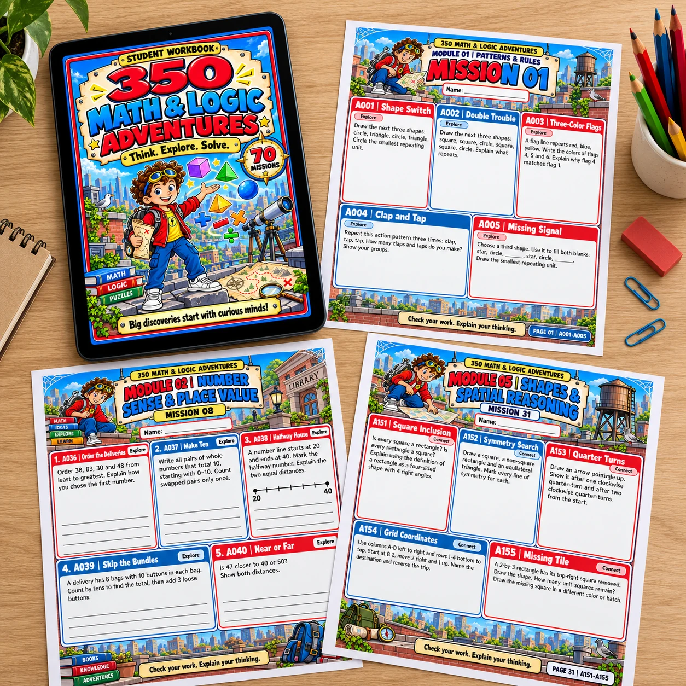
Browse the 12-module index and choose a topic to explore: numbers, patterns, geometry, logic, or another challenge.
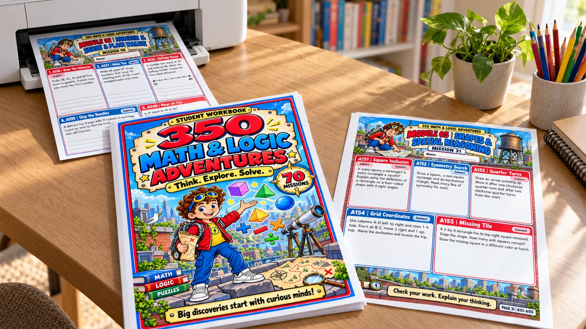
Print your chosen pages. Gather a pencil, an eraser, and any supplies the mission needs, such as objects for counting or drawing.
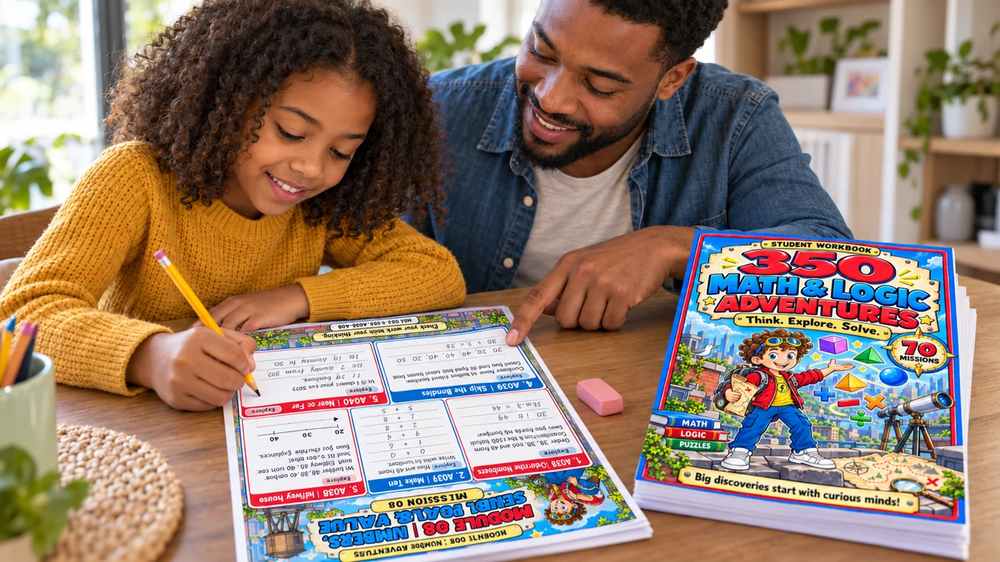
Read the challenge, give your child time to try, and ask how they reached their answer. Explore with drawings, groups, and other strategies.
The included Explorer's Mission Guide encourages careful reading, looking for clues, recording steps, and checking answers.
Give kids space to show their ideas through pictures, groups, number lines, tables, or equations.
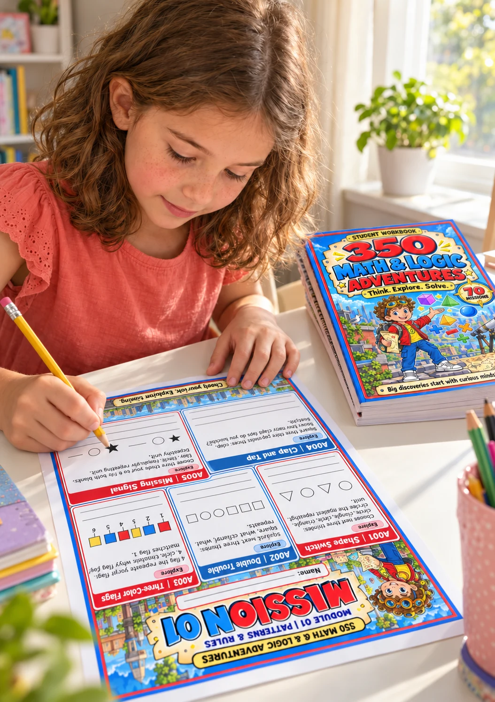
For families looking for challenges to explore at home and educators seeking a variety of activities. Choose a mission for independent work or discuss different solutions as a group.
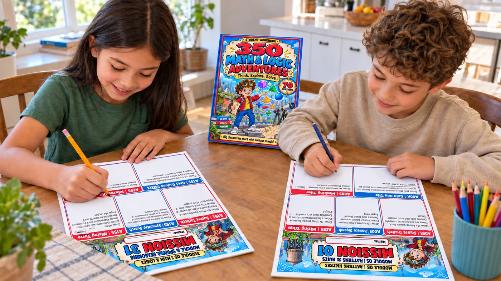
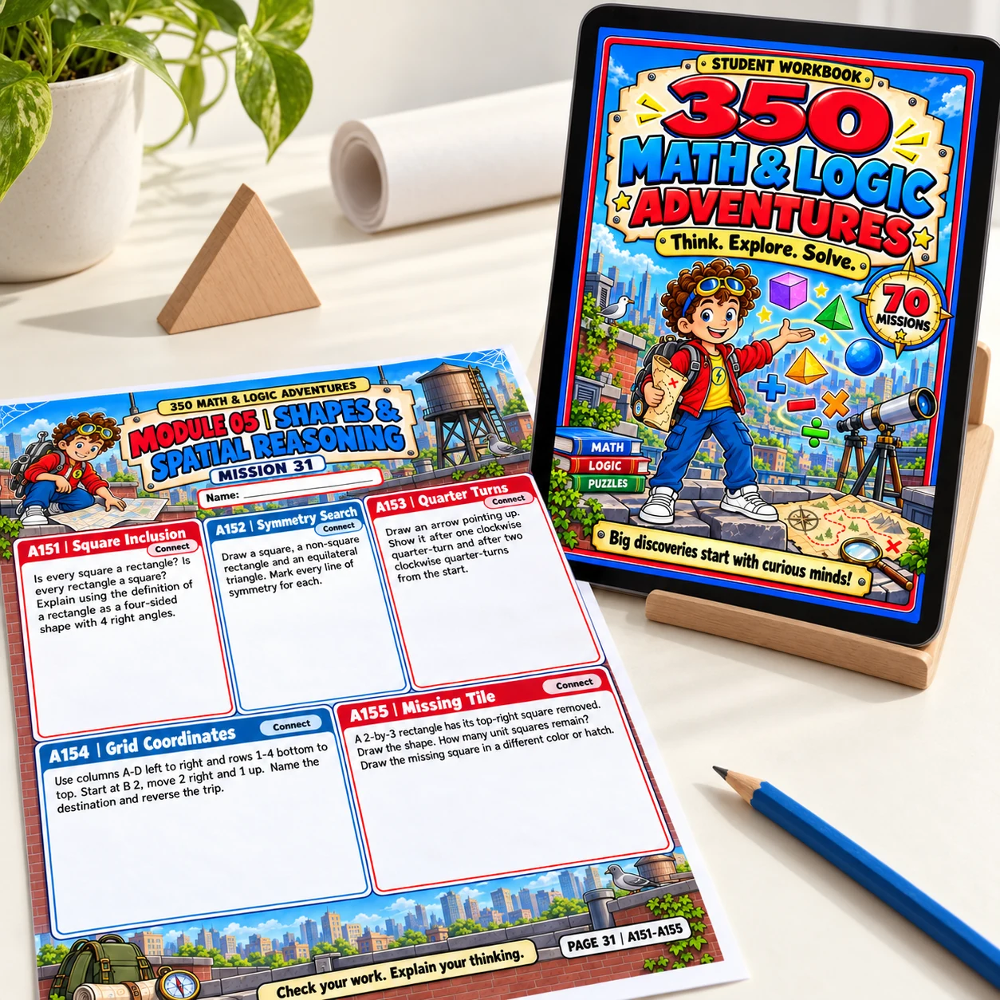
An illustrated digital collection organized to help you find a topic and prepare the next activity.
Was US$29.99 · Now only
It is a digital PDF workbook with 350 activities organized into 70 missions and 12 modules. Illustrated challenges explore numbers, operations, shapes, logic, measurement, fractions, data, and more.
The PDF is in English, including the activity instructions and the Explorer's Mission Guide. The previews show what the actual workbook pages look like.
This is a digital PDF product. You can print the pages you want to use. Binders, tablets, printers, and other objects shown in the images illustrate possible uses and are not included.
No. The index organizes topics and pages so you can choose a module or mission and print only what you plan to use.
Consider what your child already knows and how challenging each activity is. Start with a mission they can explore with some independence, and help with reading or strategies when needed.
Start with the printed pages, a pencil, and an eraser. Depending on the instructions, some activities can be explored with drawings, counting objects, and other simple supplies.
Yes. The collection now includes an Answer & Teaching Guide alongside the Student Workbook. It provides answers, explanations, and visual examples to help you check the work and discuss the reasoning behind each solution. You can explore sample pages in the answer key preview above.
There is no required daily schedule. Set a pace that suits your child's interests, availability, and needs, and revisit challenges whenever it helps.
Explore the missions and imagine what your child could discover with a sheet of paper, a pencil, and a good question.
Get my workbook